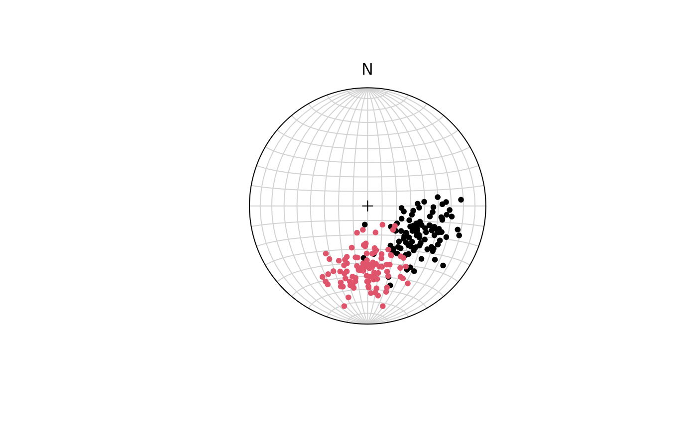

Test against the null-hypothesis that the samples are drawn from the same Fisher population.
Examples
set.seed(20250411)
x <- rvmf(100, mu = Line(120, 50), k = 20)
y <- rvmf(100, mu = Line(180, 45), k = 20)
stereoplot()
stereo_point(x, col = 1)
stereo_point(y, col = 2)

fisher_ftest(x, y)
#> Reject null-hypothesis
#> F stat p-value
#> 264.17684 3.01851